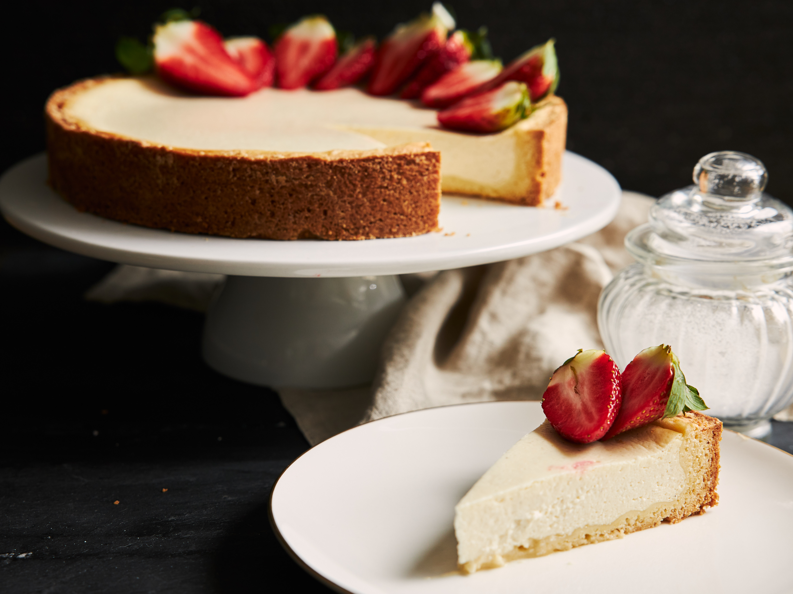

Philadelphia Classic Cheesecake
Home

Designed by Magnific
Description
A simple Philadelphia-style cheesecake topped with fresh strawberries.
Recipe source.
Ingredients
- 1-1/2 cups Honey Maid Graham Cracker Crumbs
- 1/3 cup butter, melted
- 3 tablespoons sugar
- 4 (8 ounce) packages Philadelphia Cream Cheese, softened
- 1 cup sugar
- 1 teaspoon vanilla
- 4 large eggs
Steps
- Preheat oven to 325°F (165°C)
- Mix cookie crumbs, butter, and 3 tablespoons sugar until combined;
press firmly onto the bottom of a 9 inch nonstick springform pan.
- Beat cream cheese, 1 cup sugar, and vanilla in a mixing bowl until smooth.
- Add eggs, one at a time, mixing on low speed until just blended. Pour over crust.
- Bake in the preheated oven until center is almost set, about 45-55 minutes.
- Loosen cake form the pan rim; cool before removing rim.
- Refrigerate for 4 hours before serving.